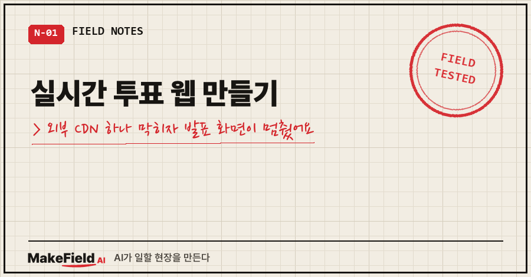
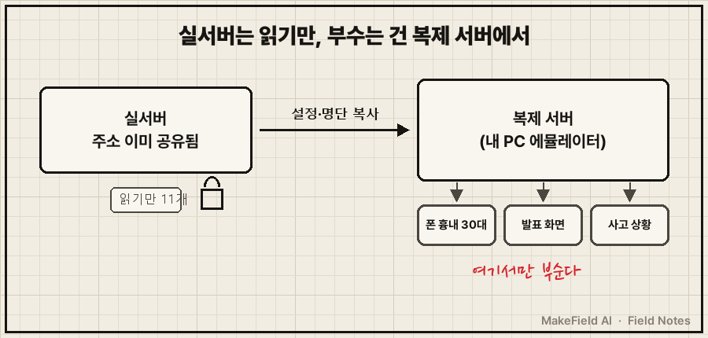
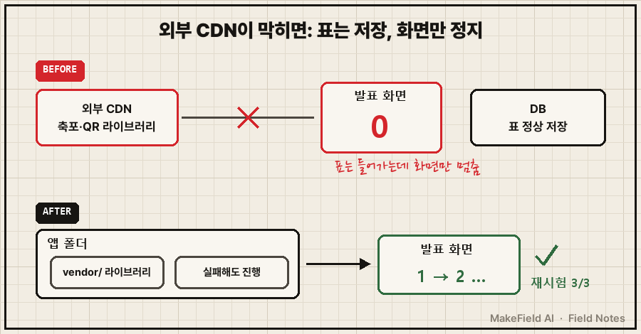
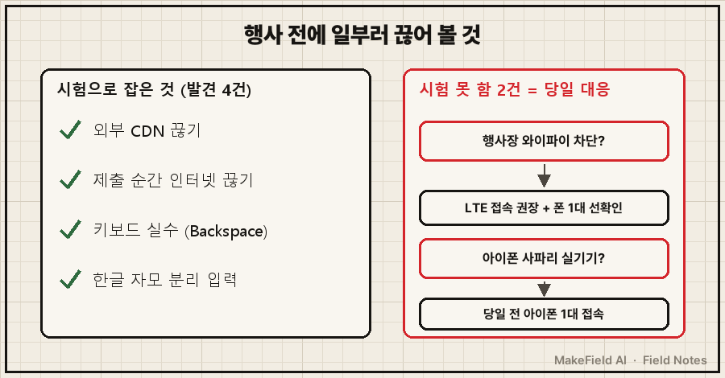

행사 전날, AI랑 만든 투표 웹을 시험 166개로 돌렸어요.
서버 규칙도, 60명 동시 접속도, 인터넷 끊김 사고도 다 통과했는데
정작 화면을 멈춘 건 축포 효과랑 QR을 그려 주는 외부 라이브러리였습니다.
실시간 투표 웹 만들기에서 외부 CDN(남의 서버에서 받아 오는 라이브러리)이 막히면, 표는 DB에 다 저장되는데 발표 화면의 투표 수만 0에서 안 움직일 수 있어요. 그래서 라이브러리를 앱 폴더 안으로 들여오고, 못 불러와도 투표 진행은 계속되게 고쳤습니다. 2026년 11월, 참가자 약 60명짜리 회사 행사 투표를 준비하며 실제로 재현하고 고친 일이에요.
본업은 설비 시운전과 제어 쪽이에요.
웹은 비전문이라 코드는 AI가 짜고, 저는 "어디서 터질까"만 붙들고 있었습니다.
1. 만든 것: 공통 QR 하나로 폰 투표, 큰 화면엔 실시간 현황
요구는 단순했어요.
- 입구에 QR 하나 → 각자 폰으로 접속해서 이름 확인 후 투표
- 앞쪽 큰 화면엔 투표 수가 실시간으로 올라감
- 사회자가 클릭하면 결과 공개 + 축포
처음엔 회사 안 서버에 올리려 했는데, 폰에서 접속이 안 되는 걸 직접 확인하고 접었어요.
그래서 무료 클라우드 DB(Firebase 무료 플랜)로 옮겼습니다.
무료 플랜은 서버 함수를 못 써서, 서버 코드 없이 DB 보안 규칙만으로 1인 1표·명단 대조·투표 단계 검사를 걸었어요.
AI랑 며칠 고치면서 v1에서 v11까지 갔어요.
부문별 후보, 현장 재투표 허용, 동점이면 결선 투표까지..
기능이 늘수록 "이거 당일에 안 터질까"가 커지더라고요.
2. 실서버는 못 건드리니, 똑같은 서버를 하나 더 만들었어요
제가 AI에게 준 지시는 이거였어요.
"절대 오류 없이, 전수점검 개념으로."
문제는 실서버 주소를 이미 사람들에게 돌린 뒤였다는 거예요.
시험하겠다고 투표를 열었다 닫았다 하면, 미리 접속해 둔 폰들이 같이 흔들립니다.
그래서 복제 서버를 띄웠어요.
- 내 PC에 Firebase 에뮬레이터(로컬 가짜 DB) 실행 — 자바(JDK 21) 휴대용 버전으로
- 실서버의 설정·명단을 그대로 복사해서 넣음
- 헤드리스 브라우저(화면 없이 도는 크롬)로 폰·발표 화면을 흉내 내서 시나리오 실행
- 실서버에는 읽기만 하는 확인 11개만
시운전할 때 실제 설비를 돌리기 전에 모의로 먼저 부숴 보는 것과 같은 감각이었어요.

3. 시험 166개, 이렇게 나눴어요
| 구분 | 개수 | 대표 확인 내용 |
|---|---|---|
| DB 보안 규칙 | 41 | 중복 투표·명단 밖 이름 거부, 같은 사람 3기기 동시 제출 → 1건만 저장 |
| 정상 행사 흐름 | 41 | 미리 접속한 폰이 시작 순간 자동 전환, 새로고침해도 완료 유지 |
| 현장 사고 | 30 | 제출 순간 인터넷 끊김, 발표 화면 2대 동기, 마감과 동시 제출 |
| 동점·결선·0표 | 23 | 동점 → 결선 이름 자동 채움, 한 부문 0표 처리 |
| 동시 접속 | 8 | 폰 30대(느린 3G 2대·카톡 브라우저 2대) + 30명 동시 |
| 관리자 화면 | 9 | 실수로 저장 눌러도 명단·기록 불변 |
| 외부 CDN 차단 | 3 | 라이브러리 서버가 막힌 상태에서 투표·현황 |
| 실서버(읽기만) | 11 | 배포 파일 응답, 대기 화면, DB 쓰기 0 |
숫자도 몇 개 남았어요.
60명 동시 제출은 0.65초 만에 전원 저장됐고, 폰 30대 + 30명 동시 시험에서 가장 늦은 저장이 6.9초였습니다.
여기까진 순조로웠죠.
4. 걸린 건 축포였어요 — CDN 차단 시험에서만 재현
발표 화면은 QR 그리기와 축포 효과를 외부 CDN 두 곳에서 받아 오고 있었어요.
"행사장 인터넷이 그 주소만 막으면?"을 흉내 내려고, 헤드리스 브라우저에서 그 두 주소 요청만 끊었습니다.
const BL = ["cdn.jsdelivr.net", "cdnjs.cloudflare.com"];
await p.setRequestInterception(true);
p.on("request", (q) => (BL.some((h) => q.url().includes(h)) ? q.abort() : q.continue()));결과는 이랬어요.
- 폰: "투표 완료" 정상
- DB: 표 정상 저장
- 발표 화면: 투표 수가 0에서 안 움직임 (재현 확인)
표는 다 들어가는데 화면만 멈춰 있으면, 사회자 입장에선 "투표가 안 되고 있다"와 구별이 안 돼요.
보고서에 '치명'으로 올린 건 이 한 건이었습니다.
고친 건 두 가지예요.
<script src="vendor/qrcode.min.js?v=11"></script>
<script src="vendor/confetti.browser.min.js?v=11"></script>
const fx = (o) => { try { if (window.confetti) window.confetti(o); } catch (e) {} }; // 축포 실패해도 진행 계속라이브러리 파일을 앱 폴더(vendor/) 안으로 옮기고, 축포·QR 호출은 실패해도 넘어가게 감쌌어요.
같은 차단 상태로 다시 돌리니 3개 전부 통과했습니다.
여러분이 만든 화면에도 외부에서 받아 오는 "장식품"이 몇 개나 붙어 있나요?

5. 나머지 발견 3건과, 시험 못 한 2건
치명은 아니어도 당일이면 사고였을 것들이에요.
- 투표 순간 인터넷이 끊기면 "전송 중…"만 떠 있음 → 창 닫으면 표 유실 → 4초 뒤 "연결 대기 중… 창을 닫지 마세요" 안내 추가
- 발표 화면에서 Backspace = 이전 단계 → 실수 한 번에 결과 화면이 마감 화면으로 돌아감 → Backspace 기능 제거
- 일부 기기에서 한글이 자모로 쪼개져 입력됨 → 본인인데 "명단에 없음" → 이름을 NFC(유니코드 정규화)로 맞춰서 해결
그리고 시험 못 한 것도 못 했다고 적었어요.
- 행사장 와이파이가 클라우드 접속을 막는지는 현장이라 시험 불가 → 공지에 "LTE로 접속" 권장, 행사 전 폰 1대로 대기 화면 먼저 확인
- 아이폰 사파리 실기기는 복제 서버 시험 범위 밖(크롬 계열만 흉내) → 당일 전에 아이폰 1대로 접속 확인
익명성도 하나 남겼어요. 화면엔 누가 누구를 찍었는지 안 보이지만, 관리자가 DB 콘솔에서 명단과 맞춰 보면 거꾸로 알 수 있는 구조예요. 그래서 안내 문구는 "완전 익명"이 아니라 "화면에 표시 안 됨"까지만 쓰기로 했습니다. 지난번 익명 설문 만들기 글에서 AI가 짚었던 "실제로는 볼 수 있는데 못 본다고 적으면 기만"이라는 선을 이번엔 처음부터 그었어요.
이 글을 쓰는 시점은 행사 전날이라, 당일 결과는 아직 없어요.

6. 자주 묻는 질문
Q. 실시간 투표 웹 만들기, 무료 플랜으로 60명 행사가 버티나요?
제 경우엔 여유가 있었어요. Firebase 무료 한도는 하루 읽기 5만·쓰기 2만 건이고, 행사 예상은 수천 건 수준이었어요. 시험은 전부 복제 서버에서 해서 실서버 사용량은 0이었습니다.
Q. CDN을 쓰면 안 되는 건가요?
그렇진 않아요. 다만 행사장·회사망처럼 내가 통제 못 하는 네트워크에서 돌 화면이라면, 꼭 필요한 라이브러리는 앱 안에 같이 두고 장식 기능은 실패해도 넘어가게 짜 두는 게 안전했어요. 무엇보다 "그 주소를 끊어 보는 시험"을 따로 두는 게 핵심이었습니다.
Q. AI한테 시험을 맡길 때 뭐라고 시켰나요?
"전수점검"이라고 했더니 AI가 시나리오를 묶음별로 나눠 왔어요. 제가 한 일은 "실서버는 건드리지 마", "남의 서버가 막히면?"처럼 범위를 정해 준 거였습니다. 외부 의존성 차단 묶음은 고작 3개였는데 치명타는 거기서 나왔어요.
내가 짠 로직보다 남의 서버에서 받아 오던 축포가 더 위험했어요. 다음에 급하게 웹 도구를 만들면, 기능 시험보다 "외부 주소 끊어 보기"부터 돌릴 생각입니다.
현장 엔지니어가 AI로 업무 도구를 급히 만들고 시험하는 과정은 makefield.ai에서도 이어서 정리하고 있어요.
참고
- Firebase 요금제·무료 한도(Firestore 일일 읽기 50,000·쓰기 20,000) → https://firebase.google.com/pricing
- 실측: 2026년 11월 개인 작업 기록(행사 투표 웹 시험 보고서·점검 스크립트, 조직·행사명·인원 구성·주소 제외)
태그: #실시간투표웹만들기 #실시간투표만들기 #QR투표만들기 #투표웹 #행사투표 #CDN차단 #jsdelivr #외부라이브러리의존성 #Firebase #Firestore에뮬레이터 #puppeteer #헤드리스브라우저테스트 #웹서비스테스트 #AI코딩 #MakeFieldAI